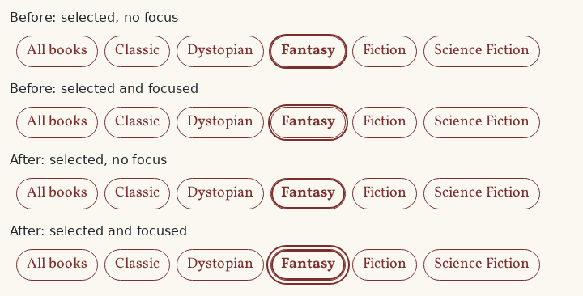

🌍 Lesson 8.3: Internationalization, Accessibility & Distribution
The Pages & Co. plugin works, is tested and is fast. This lesson makes it ready for more people and for leaving your hands: for readers in other languages, for visitors who use a keyboard or a screen reader, and for the day the plugin is handed over as a ZIP file or published in the plugin directory. You will generate a translation template, translate the plugin and its block JavaScript into Spanish, audit the theme and blocks for accessibility and fix what the audit finds, release version 1.1.0 with a proper readme that passes Plugin Check, and keep a promise from Lesson 5.4: an opt-in to delete all of the shop's data on uninstall.
🎯 Learning Objectives
By the end of this lesson, you will be able to:
- Generate a POT file with
wp i18n make-pot, write translator-friendly strings, and produce.mo,.l10n.phpand JavaScript.jsontranslations with WP-CLI - Explain how WordPress 7.1 finds a plugin's translations, for PHP (
Domain Path) and for scripts (wp_set_script_translations()and block.json) - Check a theme and its blocks for accessibility with contrast ratios, a keyboard walk and an automated axe audit, and say what automated checks miss
- Prepare a plugin for distribution: a valid
readme.txt, version numbers, the directory guidelines, a release ZIP without development files, and a clean Plugin Check report - Write an uninstall routine that removes content only when an administrator has opted in
In This Lesson
📖 More Readers, More Ways to Read
A publisher who buys a novel does three things before it reaches every reader who wants it. The author's manuscript is prepared so that translators can work on it: names checked, idioms marked, nothing that only makes sense in English. Translators then produce the Spanish and German editions. And the publisher makes editions for readers who read differently: large print, an audiobook. Software has the same three jobs, with names you will meet everywhere:
💡 Mental model: manuscript, translations, editions for every reader
Internationalization (i18n: i, 18 letters, n) is the developer's job: every text the user sees goes through a translation function with the plugin's text domain, in a form a translator can work with. Localization (l10n) is the translator's job: a translation file per language. Accessibility (a11y) makes the result usable by everyone: keyboard users, screen reader users, people with low vision or color blindness. The first is code you write once; the second is files that can come later, from anyone; the third is a quality of every page.
Lesson 1.3 introduced the translation functions (__(), esc_html__() and their family), and every string in the plugin has used them since, with the text domain pagesco-books, which PHPCS has checked since Lesson 8.1. Lesson 4.3 loaded a Spanish translation for the classic theme. This lesson finishes the job for the plugin: its PHP, its block editor JavaScript and its Dashboard widget.
🔤 Internationalization: Strings to a POT File
A translator never reads your code. They get a POT file (Portable Object Template): every translatable string of the project, with where it is used and any comment you left for them. WP-CLI's wp i18n make-pot scans PHP, JavaScript and block.json files and writes one. A first look, into /tmp (from the WP-CLI container, as always):
wp i18n make-pot wp-content/plugins/pagesco-books /tmp/pagesco-books.pot --exclude=src/blocks,tests
grep -c '^msgid ' /tmp/pagesco-books.pot
grep -B3 -A4 '^msgid "%d seat"' /tmp/pagesco-books.potOutput
Plugin file detected.
Success: POT file successfully generated.
132
#. translators: %d: number of seats.
#: src/Shortcodes/EventsShortcode.php:65
#, php-format
msgid "%d seat"
msgid_plural "%d seats"
msgstr[0] ""
msgstr[1] ""The entry for the events' seat count from Lesson 5.5 shows everything a translator needs: the comment you wrote after /* translators: */, the file and line, php-format (the string contains a printf placeholder, so the translation must keep it), and two forms, singular and plural, because _n() was used. Languages have different numbers of plural forms (Polish has three, Arabic six), and the translation file says how to choose. About the options:
- What it scans. PHP files (
__(),_e(),_x(),_n(),esc_html__()…), JavaScript (__()from@wordpress/i18norwp.i18n),block.json(title, description, keywords: thetextdomainfield says whose they are), and the plugin header (name, description).vendorandnode_modulesare always skipped. --exclude=src/blocks,tests. The blocks' sources and their build copies contain the same strings. JavaScript translations are matched to the script file the browser loads,build/blocks/…/index.js, so the POT should point there, not atsrc/blocks/…/edit.js. (render.phpandblock.jsonare inbuild/too.) Tests have no user-facing strings.- Only strings with the plugin's text domain (from the
Text Domainheader) are collected. A string with the theme's domain in the plugin would be left out, which is why PHPCS checks domains.
Strings translate well when you follow a few rules, which also make PHPCS and make-pot happy (Common Mistake 1 breaks them):
| Rule | Write | Not |
|---|---|---|
| Whole sentences, placeholders for the variable parts | sprintf( __( 'Books in %s', 'pagesco-books' ), $genre ) | __( 'Books in ', … ) . $genre |
| Numbered placeholders when there are several, so the order can change | 'Showing %1$s of %2$s books' | 'Showing %s of %s books' |
| A comment for every placeholder | /* translators: %s: genre name, such as Fantasy. */ on the line before | nothing |
| Plural forms for counts | _n( '%d seat', '%d seats', $count, … ) | __( '%d seats', … ) |
| Context for short ambiguous words | _x( 'Order', 'sort order', 'pagesco-books' ) | __( 'Order', … ) for both "sort order" and "purchase order" |
| Literal strings only | __( 'Fantasy Books', … ) | __( $label, … ): no tool can extract a variable |
And escape the translation like any other output: esc_html__(), esc_attr__(). A translation is text from someone else, and a translator's <script> must stay text (Lesson 5.3).
🌐 How Translations Reach the Page
From the POT, a translator makes a PO file per language (pagesco-books-es_ES.po: the same entries with msgstr filled in), with a desktop editor such as Poedit, a plugin such as Loco Translate, or the web tool behind translate.wordpress.org. From the PO, WP-CLI builds the files WordPress reads:
| File | Made with | Read by |
|---|---|---|
pagesco-books-es_ES.po | a translator | people and tools: the source of the translation |
pagesco-books-es_ES.mo | wp i18n make-mo | PHP: the classic compiled format |
pagesco-books-es_ES.l10n.php | wp i18n make-php | PHP, WordPress 6.5+: a PHP array that OPcache keeps in memory, loaded instead of the .mo when both exist |
pagesco-books-es_ES-<md5>.json | wp i18n make-json | JavaScript: one file per script, named after the MD5 hash of the script's path in the plugin |
The whole path, from your code to the page:
PHP strings load by themselves. Since WordPress 6.8, the active plugin's Text Domain and Domain Path headers tell WordPress where to look, and the translations load just in time, the first time a string of that domain is translated (Lesson 4.3's version note: load_plugin_textdomain() is only needed for 6.7 and older). Plugins from the directory get their translations as language packs in wp-content/languages/plugins/, found without any header; a plugin that ships its own files needs Domain Path: /languages, which the project adds.
JavaScript strings need two things: the script must be told which domain it uses, and a JSON file for exactly that script must exist. For the Dashboard widget, Lesson 7.1 already wrote wp_set_script_translations( 'pagesco-stock-widget', 'pagesco-books' ); for blocks, register_block_type does it for every script that block.json names, because block.json has "textdomain": "pagesco-books". When the page prints the script, WordPress looks for the JSON whose name contains the hash of the script's path relative to the plugin, and prints its strings in an inline script before it (wp.i18n.setLocaleData()). The hashes your files will need:
for script in assets/js/stock-widget.js build/blocks/book-list/index.js; do
echo "$(printf '%s' "$script" | md5sum | cut -d' ' -f1) $script"
doneOutput
cfe2bc3ef2a0800531dc26491d4caca6 assets/js/stock-widget.js
1ef6e759fb00b1b9d64a64056a083f27 build/blocks/book-list/index.jswp i18n make-json computes these names from the references in the PO file (the #: build/blocks/book-list/index.js:1 lines), which is why the POT must point at the built file.
⚠️ make-json removes JavaScript strings from the PO file
By default, wp i18n make-json moves the JavaScript strings out of the PO file into the JSON files ("purges" them), on the assumption that the PO is only used to build the .mo. Strings used in both PHP and JavaScript (the plugin's "Mark sold out" is one) then go missing from the next .mo, and your source PO loses entries. Pass --no-purge to keep the PO whole, as the project does.
♿ Accessibility Checks
The standard is WCAG 2.2 (Web Content Accessibility Guidelines), level AA: what most laws and contracts mean by "accessible", and what WordPress core commits to. Its principles: content must be perceivable (text alternatives, enough contrast), operable (everything works with a keyboard, focus is visible), understandable (labels, consistent navigation) and robust (correct HTML that assistive technology can read). A practical check of a theme and its blocks has three parts.
1. Contrast, computed
Normal text needs a contrast ratio of at least 4.5:1 with its background (3:1 for large text and for the outlines of controls). Lesson 3.2 chose the palette with that in mind; check the pairs the theme actually uses with a script that reads the palette from theme.json and applies WCAG's formula. Create wordpress/pagesco-contrast.php:
<?php
/**
* Checks the WCAG contrast of the color pairs the pagesco theme uses. Usage: wp eval-file pagesco-contrast.php
*/
/**
* The relative luminance of a #rrggbb color, as WCAG 2 defines it.
*
* @param string $hex A color such as #1f2a2e.
*/
function pagesco_luminance( string $hex ): float {
$channels = array_map( fn( $pair ) => hexdec( $pair ) / 255, str_split( ltrim( $hex, '#' ), 2 ) );
$linear = array_map( fn( $c ) => $c <= 0.04045 ? $c / 12.92 : ( ( $c + 0.055 ) / 1.055 ) ** 2.4, $channels );
return 0.2126 * $linear[0] + 0.7152 * $linear[1] + 0.0722 * $linear[2];
}
/**
* The contrast ratio of two colors, from 1 (none) to 21 (black on white).
*
* @param string $text Text color.
* @param string $background Background color.
*/
function pagesco_contrast( string $text, string $background ): float {
$lighter = max( pagesco_luminance( $text ), pagesco_luminance( $background ) );
$darker = min( pagesco_luminance( $text ), pagesco_luminance( $background ) );
return ( $lighter + 0.05 ) / ( $darker + 0.05 );
}
// The theme's palette, by slug, from theme.json (Lesson 3.2).
$pagesco_palette = wp_list_pluck( wp_get_global_settings( array( 'color', 'palette', 'theme' ) ), 'color', 'slug' );
// Text color => background color, as the theme combines them.
$pagesco_pairs = array(
array( 'ink', 'paper', 'body text' ),
array( 'oxblood', 'paper', 'links' ),
array( 'slate', 'paper', 'dates, small text' ),
array( 'ink', 'sage', 'header band' ),
array( 'paper', 'ink', 'notice bar, footer' ),
array( 'paper', 'oxblood', 'buttons' ),
);
foreach ( $pagesco_pairs as list( $pagesco_text, $pagesco_background, $pagesco_where ) ) {
$pagesco_ratio = pagesco_contrast( $pagesco_palette[ $pagesco_text ], $pagesco_palette[ $pagesco_background ] );
printf(
"%-8s on %-8s %5.1f:1 %-4s %s\n",
$pagesco_text,
$pagesco_background,
$pagesco_ratio,
$pagesco_ratio >= 7 ? 'AAA' : ( $pagesco_ratio >= 4.5 ? 'AA' : 'FAIL' ),
$pagesco_where
);
}Output
ink on paper 13.9:1 AAA body text
oxblood on paper 8.8:1 AAA links
slate on paper 5.8:1 AA dates, small text
ink on sage 12.0:1 AAA header band
paper on ink 13.9:1 AAA notice bar, footer
paper on oxblood 8.8:1 AAA buttonsEvery pair passes AA, all but the small gray text even AAA (7:1). The theme's choices are safe; Exercise 2 looks at the pairs an editor could still pick in a block's color settings. Keep the script for now: the project removes it.
2. The keyboard walk
Put the mouse away, open a page, and press Tab again and again. Every link and control must be reached in a sensible order, and you must always see where you are. Recorded on Find a Book with the Fantasy genre selected (?genre=fantasy), with the focused element and its outline after each press:
Output (recorded in Chromium)
Tab 1: See events browser focus ring
Tab 2: Skip to content browser focus ring
Tab 3: Pages & Co. browser focus ring
Tab 4: About Us browser focus ring
Tab 5: Contact browser focus ring
Tab 6: Events browser focus ring
Tab 7: Find a Book browser focus ring
Tab 8: Sample Page browser focus ring
Tab 9: All books browser focus ring
Tab 10: Classic browser focus ring
Tab 11: Dystopian browser focus ring
Tab 12: Fantasy outline solid 2px offset 1px
Without focus: Fantasy outline solid 2pxTwo findings. First, the order: the store notice's "See events" link comes before WordPress's "Skip to content" link. Since 7.0, core inserts the skip link at the start of the block template, and the notice is printed before the template, on wp_body_open (Lesson 2.3). A keyboard user presses Tab twice instead of once to skip the header: a small cost, kept for now and taken up in Going Further. Second, the Fantasy link, the selected genre, shows the same 2-pixel outline whether it has keyboard focus or not (focus only moves it by one pixel), because Lesson 6.4's style draws the selection with outline, which replaces the browser's focus ring. A keyboard user who tabs onto it cannot tell. WCAG 2.4.7 (Focus Visible) fails, and the project fixes it.
3. An automated audit with axe
axe-core is the open-source rule engine behind many accessibility tools, including the axe DevTools browser extension and Lighthouse's accessibility audit. Run the extension (or Lighthouse) on each kind of page. Recorded with axe-core 4.14 on four pages of the shop, WCAG 2.0 to 2.2 A and AA rules plus axe's best practices:
Output (recorded with axe-core 4.14)
/: 2 violations, 36 rules passed
list (serious): <ul> and <ol> must only directly contain <li>, <script> or <template> elements
.wp-block-navigation__container
region (moderate): All page content should be contained by landmarks
.pagesco-notice
#wp-skip-link
/books/dune/: 2 violations, 28 rules passed
list (serious): <ul> and <ol> must only directly contain <li>, <script> or <template> elements
.wp-block-navigation__container
region (moderate): All page content should be contained by landmarks
.pagesco-notice
#wp-skip-link
/find-a-book/: 2 violations, 33 rules passed
list (serious): <ul> and <ol> must only directly contain <li>, <script> or <template> elements
.wp-block-navigation__container
region (moderate): All page content should be contained by landmarks
.pagesco-notice
#wp-skip-link
/events/: 2 violations, 34 rules passed
list (serious): <ul> and <ol> must only directly contain <li>, <script> or <template> elements
.wp-block-navigation__container
region (moderate): All page content should be contained by landmarks
.pagesco-noticelist(serious): in the header's Navigation, the<ul>contains another<ul>directly, not inside an<li>. The navigation (Lesson 3.2) shows a Page List block, and core renders the Page List's own list inside the Navigation's list. Screen readers then announce a list with one odd item. The fix is content, not code: replace the Page List with one link per page, which the Site Editor does when you click the Page List and choose Edit, and which also lets the shop drop WordPress's default "Sample Page" from its menu.region(moderate, a best practice): content outside any landmark. The store notice is a<div>before the<header>, so screen reader users who move from landmark to landmark never meet it; giving itrole="region"and a name makes it one. The other node is core's own skip link, which sits before the landmarks by design: nothing to fix in the theme.
Everything else passed, including the plugin's blocks: the Book Filter's labeled nav, aria-current and aria-live count from Lesson 6.4, the Book List's links, the events list. That is the good news, and the limit: automated tools find perhaps a third of real accessibility problems. They cannot tell whether alternative text describes the image, whether the reading order makes sense, whether a screen reader announces the Book Filter's new count helpfully, or whether the focus outline is visible enough (the keyboard walk found that one, axe did not). Test with a screen reader too: NVDA on Windows and VoiceOver on macOS are free.
💡 Themes in the directory: the accessibility-ready tag
A theme in the WordPress.org directory may use the accessibility-ready tag only after a review against a published list: a skip link, keyboard-reachable menus with visible focus, contrast, headings, form labels, no information by color alone. Block themes get much of it from core (the skip link, the Navigation block's keyboard support), and the rest is the theme's choices, like the ones checked here.
📦 Distribution
Pages & Co. Books is a client plugin: it will be installed on one site, and nobody will download it from WordPress.org. It will still be distributed, to a staging site, to the live site, to the next developer, as a ZIP file with a version number, and building it to the directory's standard is the professional baseline either way. Three pieces make a plugin distributable.
The readme.txt
The directory builds a plugin's page from readme.txt, a Markdown-like file with a fixed header. Clients read it too, and so does Plugin Check:
| Header | Means |
|---|---|
=== Plugin Name === | the first line |
Contributors | WordPress.org user names of the authors |
Tags | up to five, for directory search |
Requires at least, Requires PHP | the same minimums as the plugin header (activation checks the header, Lesson 5.1) |
Tested up to | the newest WordPress version you tested, major and minor only: 7.1 |
Stable tag | the version users should get; must match the plugin header's Version |
License, License URI | GPL-compatible, as the directory requires |
| the line after the header | a short description, at most 150 characters |
Then sections: == Description ==, == Installation ==, == Frequently Asked Questions ==, == Changelog == and == Upgrade Notice == (shown to users before they update).
Versions
The plugin's version appears in the header (Version), in the constant PAGESCO_BOOKS_VERSION (which also busts browser caches: it is the ?ver= of the Stock widget's script, Lesson 7.1), in readme.txt's Stable tag and changelog, and in package.json. Most WordPress plugins follow semantic versioning: MAJOR.MINOR.PATCH, where a patch fixes bugs, a minor version adds features that do not break anything, and a major version may break things (a removed hook, a changed REST response). This lesson's release adds features and raises a requirement, so it is 1.1.0. Raising "Requires at least" is a minor change for users on recent WordPress and a hard stop for the rest: WordPress refuses to install or activate the plugin on older versions, and the directory does not offer them the update.
The directory's guidelines, and Plugin Check
Plugins in the WordPress.org directory must follow its detailed guidelines. The ones that most often matter for code like ours:
- GPL-compatible code and assets, and human-readable code (no obfuscation; minified build files are fine when the sources are available).
- No tracking without consent, and every external service documented in the readme: what is sent, when, and links to the service's terms and privacy policy. The supplier client of Lesson 7.3 is exactly such a service.
- No code from elsewhere at run time: no remote scripts or updates outside WordPress.org, everything shipped in the ZIP.
- Unique prefixes for everything global (Lesson 1.3), no hijacking of the admin with nags, and no "powered by" links on the site without the user's consent.
- Trademarks: a plugin may not start its name with someone else's brand ("WordPress …" is out; "… for WordPress" is fine).
Plugin Check is the WordPress.org review team's own tool, a free plugin with a WP-CLI command: it runs a PHPCS ruleset similar to Lesson 8.1's plus checks of headers, the readme, file types, and functions that need a newer WordPress than the plugin requires. Like Query Monitor, it is a development tool: install it, use it, remove it.
wp plugin install plugin-check --activateOutput (your version number may differ)
Installing Plugin Check (PCP) (2.1.0)
Downloading installation package from https://downloads.wordpress.org/plugin/plugin-check.2.1.0.zip...
Unpacking the package...
Installing the plugin...
Plugin installed successfully.
Activating 'plugin-check'...
Plugin 'plugin-check' activated.
Success: Installed 1 of 1 plugins.Run it on the plugin as it is now, and count the findings by type and code (the full report, without --format=csv, lists every file and line):
wp plugin check pagesco-books --format=csv --fields=type,code | grep -e ERROR -e WARNING | sort | uniq -c | sort -rnOutput
60 WARNING,WordPress.NamingConventions.PrefixAllGlobals.NonPrefixedVariableFound
7 ERROR,missing_direct_file_access_protection
4 WARNING,WordPress.DB.DirectDatabaseQuery.DirectQuery
3 WARNING,WordPress.DB.SlowDBQuery.slow_db_query_tax_query
3 WARNING,WordPress.DB.SlowDBQuery.slow_db_query_meta_key
2 WARNING,WordPress.DB.DirectDatabaseQuery.NoCaching
2 ERROR,wp_function_not_compatible_with_requires_wp
2 ERROR,application_detected
1 WARNING,WordPress.DB.SlowDBQuery.slow_db_query_meta_query
1 WARNING,WordPress.DB.DirectDatabaseQuery.SchemaChange
1 ERROR,plugin_header_invalid_plugin_uri_domain
1 ERROR,plugin_header_invalid_author_uri_domain
1 ERROR,no_plugin_readme
1 ERROR,hidden_filesThe errors are a release checklist:
missing_direct_file_access_protection: the blocks'render.phpandvariations.php(insrcandbuild) andtests/bootstrap.phprun code when loaded, and have noABSPATHguard (Lesson 5.1). The class files are not listed: a file that only declares a class does nothing when requested directly.wp_function_not_compatible_with_requires_wp: Lesson 7.3's Abilities feature calls functions from WordPress 6.9 while the header says 6.8. The code never runs on 6.8 (its actions never fire there), but the honest fix is the header: the plugin needs 6.9.no_plugin_readme, and thePlugin URIandAuthor URIheaders point toexample.com, a placeholder domain the directory rejects. A client plugin without a public homepage can leave both optional headers out.hidden_filesandapplication_detected:.wp-env.json,phpcs.xml.distandphpunit.xml.distare development files that must not ship. They stay in the project (and in Git, Lesson 8.4); the release ZIP leaves them out.
The warnings are the ones Lesson 8.1 documented in the ruleset (direct queries in the events table's query layer, meta and taxonomy queries that Lesson 8.2 measured) plus variables in the blocks' render.php files, which WordPress includes inside a function. The project works through the errors and builds the ZIP.
⚠️ Common Mistakes
1. Strings a translator cannot translate
A quick scratch file with four typical mistakes, in a folder of its own (wordpress/pagesco-strings-test/strings.php), scanned by make-pot:
<?php
/**
* Plugin Name: Strings Test
* Text Domain: pagesco-books
*/
$shown = 3;
$total = 11;
$genre = 'Fantasy';
echo sprintf( __( 'Showing %s of %s books', 'pagesco-books' ), $shown, $total );
echo __( 'Books in ', 'pagesco-books' ) . $genre;
echo sprintf( __( '%d books', 'pagesco-books' ), $shown );
echo __( $genre, 'pagesco-books' );wp i18n make-pot pagesco-strings-test /tmp/strings.pot
grep '^msgid' /tmp/strings.potOutput
Plugin file detected.
Warning: The string "Showing %s of %s books" contains placeholders but has no "translators:" comment to clarify their meaning. (strings.php:11)
Warning: Multiple placeholders should be ordered. (strings.php:11)
Warning: The string "%d books" contains placeholders but has no "translators:" comment to clarify their meaning. (strings.php:13)
Success: POT file successfully generated.
msgid ""
msgid "Strings Test"
msgid "Showing %s of %s books"
msgid "Books in "
msgid "%d books"What it means: make-pot warns about two of the four, still writes the file, and exits successfully, so warnings scroll by unnoticed in a build. The two it accepts silently are worse: "Books in " arrives as a fragment (a translator cannot know what follows, and in many languages the genre must come first), and __( $genre ) produced no entry at all, because no tool can know what a variable will hold. And "%d books" has no singular, so "1 books" in English, and wrong forms in every language with other plural rules. Fix: the rules from the table above: /* translators: 1: books shown, 2: books in the catalog. */ with %1$s and %2$s, sprintf( __( 'Books in %s' ), $genre ), _n(), and translate data such as genre names where they are stored (the genre terms), not in code. PHPCS flags the missing comment and the variable too (WordPress.WP.I18n). Remove the folder:
rm -r pagesco-strings-test /tmp/strings.pot2. An uninstall that cannot find the genres
When WordPress runs uninstall.php, the plugin is not loaded: its features never booted, so the book post type and the genre taxonomy are not registered. Code written as if they were fails. The same situation, reproduced with --skip-plugins (Lesson 8.1):
wp --skip-plugins=pagesco-books eval '$genres = get_terms( array( "taxonomy" => "genre", "hide_empty" => false ) ); echo is_wp_error( $genres ) ? $genres->get_error_code() . ": " . $genres->get_error_message() : count( $genres ) . " genres", "\n";'
wp --skip-plugins=pagesco-books eval 'echo count( get_posts( array( "post_type" => "book", "numberposts" => -1 ) ) ), " books\n";'Output
invalid_taxonomy: Invalid taxonomy.
11 booksWhat it means: the books are found (WP_Query just compares the post_type column, registered or not), but get_terms() returns a WP_Error for the unregistered taxonomy. An uninstall that loops over the result deletes nothing, without a message, and leaves five orphaned genres behind. Fix: in uninstall.php, register what you need before you use it: register_taxonomy( 'genre', 'book' );, as the project's version does.
3. A release ZIP with the development autoloader
The release ZIP should contain the plugin's own code and Composer's autoloader (vendor/autoload.php and vendor/composer/), but not PHPUnit and the coding standards. Copy exactly that much, as a careful ZIP would, and load the autoloader as WordPress would:
mkdir -p /tmp/zip-test/vendor
cp -r wp-content/plugins/pagesco-books/vendor/autoload.php wp-content/plugins/pagesco-books/vendor/composer /tmp/zip-test/vendor/
php -r 'require "/tmp/zip-test/vendor/autoload.php";'Error
[26-Oct-2026 05:57:40 UTC] PHP Warning: require(/tmp/zip-test/vendor/composer/../myclabs/deep-copy/src/DeepCopy/deep_copy.php): Failed to open stream: No such file or directory in /tmp/zip-test/vendor/composer/autoload_real.php on line 41
[26-Oct-2026 05:57:40 UTC] PHP Fatal error: Uncaught Error: Failed opening required '/tmp/zip-test/vendor/composer/../myclabs/deep-copy/src/DeepCopy/deep_copy.php' (include_path='.:/usr/local/lib/php') in /tmp/zip-test/vendor/composer/autoload_real.php:41
Stack trace:
...
#2 Command line code(1): require('/tmp/zip-test/v...')
#3 {main}
thrown in /tmp/zip-test/vendor/composer/autoload_real.php on line 41(The ... line stands for two stack frames with a class name that Composer generates differently for every installation.) What it means: since Lesson 8.1 installed the development packages, Composer's autoloader requires some of their files on every load (vendor/composer/autoload_files.php lists them: PHPUnit's assertion functions, a helper of its object copier, the polyfills). Without those packages in the ZIP, the plugin dies with a fatal error on activation, on the client's site. Fix: regenerate the autoloader without development packages before packaging, composer dump-autoload --no-dev, and restore it afterwards with composer dump-autoload (or install with composer install --no-dev in a clean copy, Lesson 8.4). Remove the test folder:
rm -r /tmp/zip-test🛠️ Project: Release 1.1.0
Five steps: the uninstall opt-in and its test, the Spanish translation, the accessibility fixes, and the release itself. Allow about 70 minutes. Commands run from the WordPress folder, in the WP-CLI container, unless they say otherwise; run Step 2 in one container shell (docker compose run --rm wpcli sh, Lesson 1.2), because its backup lives in the container's /tmp.
🛠️ Step 1: The "delete all shop data" setting (15 min)
Lesson 5.4 decided that deleting the plugin keeps the shop's books, genres and book details, and named the professional pattern for the day the shop really closes: an opt-in. It belongs in the settings, off by default. Replace src/Settings.php (new: the delete_data default and its line in sanitize()):
<?php
/**
* The shop's settings: one option, an array of values with defaults.
*
* @package PagesCo\Books
*/
namespace PagesCo\Books;
/**
* Registers the pagesco_books_settings option and reads it for the rest of the plugin.
*/
final class Settings implements Feature {
/**
* The option's name in wp_options.
*/
public const OPTION = 'pagesco_books_settings';
/**
* The option group the settings form posts (settings_fields() prints it).
*/
public const GROUP = 'pagesco_books';
/**
* Registers the setting on init, so its sanitizing and default apply everywhere, not only in wp-admin.
*/
public function register(): void {
add_action( 'init', array( $this, 'register_setting' ) );
}
/**
* Every setting with its default value.
*
* @return array{notice_extra: string, show_events_link: bool, books_per_page: int, events_limit: int, delete_data: bool}
*/
public static function defaults(): array {
return array(
'notice_extra' => __( 'Open until 9 p.m. on Thursdays.', 'pagesco-books' ),
'show_events_link' => true,
'books_per_page' => 6,
'events_limit' => 5,
'delete_data' => false,
);
}
/**
* Returns one setting: the saved value, or its default when nothing is saved yet.
*
* @param string $key A key of defaults().
* @return mixed
*/
public static function get( string $key ) {
$settings = wp_parse_args( get_option( self::OPTION, array() ), self::defaults() );
return $settings[ $key ] ?? null;
}
/**
* Tells WordPress about the option: its group, type, sanitize callback and default.
*/
public function register_setting(): void {
register_setting(
self::GROUP,
self::OPTION,
array(
'type' => 'object',
'sanitize_callback' => array( $this, 'sanitize' ),
'default' => self::defaults(),
)
);
}
/**
* Cleans the submitted values before WordPress stores them. Out-of-range numbers keep the saved value.
*
* @param mixed $input The submitted settings.
* @return array
*/
public function sanitize( $input ): array {
$input = is_array( $input ) ? $input : array();
$saved = wp_parse_args( get_option( self::OPTION, array() ), self::defaults() );
$clean = array(
'notice_extra' => sanitize_text_field( $input['notice_extra'] ?? '' ),
'show_events_link' => ! empty( $input['show_events_link'] ),
'books_per_page' => absint( $input['books_per_page'] ?? $saved['books_per_page'] ),
'events_limit' => absint( $input['events_limit'] ?? $saved['events_limit'] ),
'delete_data' => ! empty( $input['delete_data'] ),
);
if ( $clean['books_per_page'] < 1 || $clean['books_per_page'] > 24 ) {
add_settings_error( self::OPTION, 'books_per_page', __( 'Books per list must be between 1 and 24.', 'pagesco-books' ) );
$clean['books_per_page'] = $saved['books_per_page'];
}
if ( $clean['events_limit'] < 1 || $clean['events_limit'] > 20 ) {
add_settings_error( self::OPTION, 'events_limit', __( 'Events to show must be between 1 and 20.', 'pagesco-books' ) );
$clean['events_limit'] = $saved['events_limit'];
}
return $clean;
}
}Replace src/Admin/SettingsPage.php (new: the Uninstall section with its checkbox at the end of add_fields(), and a description under a checkbox when the field has one):
<?php
/**
* The Settings > Pages & Co. Books screen.
*
* @package PagesCo\Books
*/
namespace PagesCo\Books\Admin;
use PagesCo\Books\Feature;
use PagesCo\Books\Settings;
/**
* Adds the settings page and builds its form with the Settings API.
*/
final class SettingsPage implements Feature {
/**
* The page's slug: options-general.php?page=pagesco-books.
*/
public const SLUG = 'pagesco-books';
/**
* Hooks the menu item, the sections and fields, and the Plugins screen link.
*/
public function register(): void {
add_action( 'admin_menu', array( $this, 'add_page' ) );
add_action( 'admin_init', array( $this, 'add_fields' ) );
add_filter( 'plugin_action_links_' . plugin_basename( PAGESCO_BOOKS_FILE ), array( $this, 'add_settings_link' ) );
}
/**
* Adds the page under Settings, for users who can manage options.
*/
public function add_page(): void {
add_options_page(
__( 'Pages & Co. Books Settings', 'pagesco-books' ),
__( 'Pages & Co. Books', 'pagesco-books' ),
'manage_options',
self::SLUG,
array( $this, 'render' )
);
}
/**
* Describes the form: three sections, five fields.
*/
public function add_fields(): void {
add_settings_section(
'pagesco_books_notice',
__( 'Store notice', 'pagesco-books' ),
array( $this, 'render_notice_intro' ),
self::SLUG
);
add_settings_field(
'notice_extra',
__( 'Notice addition', 'pagesco-books' ),
array( $this, 'render_text_field' ),
self::SLUG,
'pagesco_books_notice',
array(
'key' => 'notice_extra',
'label_for' => 'pagesco-notice-extra',
'description' => __( 'Added after the free-shipping text. Leave empty to show only that text.', 'pagesco-books' ),
)
);
add_settings_field(
'show_events_link',
__( 'Events link', 'pagesco-books' ),
array( $this, 'render_checkbox_field' ),
self::SLUG,
'pagesco_books_notice',
array(
'key' => 'show_events_link',
'label_for' => 'pagesco-show-events-link',
'label' => __( 'Show a "See events" link in the notice', 'pagesco-books' ),
)
);
add_settings_section(
'pagesco_books_lists',
__( 'Catalog and events', 'pagesco-books' ),
'__return_false',
self::SLUG
);
add_settings_field(
'books_per_page',
__( 'Books per list', 'pagesco-books' ),
array( $this, 'render_number_field' ),
self::SLUG,
'pagesco_books_lists',
array(
'key' => 'books_per_page',
'label_for' => 'pagesco-books-per-page',
'max' => 24,
)
);
add_settings_field(
'events_limit',
__( 'Events to show', 'pagesco-books' ),
array( $this, 'render_number_field' ),
self::SLUG,
'pagesco_books_lists',
array(
'key' => 'events_limit',
'label_for' => 'pagesco-events-limit',
'max' => 20,
)
);
add_settings_section(
'pagesco_books_uninstall',
__( 'Uninstall', 'pagesco-books' ),
'__return_false',
self::SLUG
);
add_settings_field(
'delete_data',
__( 'Shop data', 'pagesco-books' ),
array( $this, 'render_checkbox_field' ),
self::SLUG,
'pagesco_books_uninstall',
array(
'key' => 'delete_data',
'label_for' => 'pagesco-delete-data',
'label' => __( 'Delete all books, genres and book details when the plugin is deleted', 'pagesco-books' ),
'description' => __( 'Leave this off unless the shop is closing for good: deleted books cannot be restored. Settings, the events and the Bookseller role are always removed.', 'pagesco-books' ),
)
);
}
/**
* Prints the page: the form posts to options.php, which checks the nonce and saves the option.
*/
public function render(): void {
if ( ! current_user_can( 'manage_options' ) ) {
return;
}
?>
<div class="wrap">
<h1><?php echo esc_html( get_admin_page_title() ); ?></h1>
<form action="options.php" method="post">
<?php
settings_fields( Settings::GROUP );
do_settings_sections( self::SLUG );
submit_button();
?>
</form>
</div>
<?php
}
/**
* Prints the text under the Store notice heading.
*/
public function render_notice_intro(): void {
echo '<p>' . esc_html__( 'The bar at the top of every page of the shop.', 'pagesco-books' ) . '</p>';
}
/**
* Prints a text input for one setting.
*
* @param array $args The field's arguments from add_settings_field().
*/
public function render_text_field( $args ): void {
printf(
'<input type="text" id="%1$s" name="%2$s[%3$s]" value="%4$s" class="regular-text"><p class="description">%5$s</p>',
esc_attr( $args['label_for'] ),
esc_attr( Settings::OPTION ),
esc_attr( $args['key'] ),
esc_attr( Settings::get( $args['key'] ) ),
esc_html( $args['description'] )
);
}
/**
* Prints a checkbox for one setting.
*
* @param array $args The field's arguments from add_settings_field().
*/
public function render_checkbox_field( $args ): void {
printf(
'<label><input type="checkbox" id="%1$s" name="%2$s[%3$s]" value="1"%4$s> %5$s</label>',
esc_attr( $args['label_for'] ),
esc_attr( Settings::OPTION ),
esc_attr( $args['key'] ),
checked( Settings::get( $args['key'] ), true, false ),
esc_html( $args['label'] )
);
if ( ! empty( $args['description'] ) ) {
printf( '<p class="description">%s</p>', esc_html( $args['description'] ) );
}
}
/**
* Prints a number input for one setting.
*
* @param array $args The field's arguments from add_settings_field().
*/
public function render_number_field( $args ): void {
printf(
'<input type="number" id="%1$s" name="%2$s[%3$s]" value="%4$s" min="1" max="%5$d" step="1" class="small-text">',
esc_attr( $args['label_for'] ),
esc_attr( Settings::OPTION ),
esc_attr( $args['key'] ),
esc_attr( Settings::get( $args['key'] ) ),
absint( $args['max'] )
);
}
/**
* Adds a Settings link next to Deactivate on the Plugins screen.
*
* @param string[] $links The plugin's action links.
* @return string[]
*/
public function add_settings_link( $links ) {
$url = admin_url( 'options-general.php?page=' . self::SLUG );
array_unshift( $links, sprintf( '<a href="%s">%s</a>', esc_url( $url ), esc_html__( 'Settings', 'pagesco-books' ) ) );
return $links;
}
}And uninstall.php, which reads the choice before it deletes the settings:
<?php
/**
* Removes the plugin's data when an administrator deletes the plugin.
*
* Always: the role, the settings, the events table and the supplier transient (Lessons 5.4, 5.5, 7.3).
* Only when an administrator turned on "Delete all books, genres and book details": the shop's content too (Lesson 8.3).
*
* @package PagesCo\Books
*/
defined( 'WP_UNINSTALL_PLUGIN' ) || exit;
global $wpdb;
// Read the choice before the settings are deleted below. The plugin is not loaded: no Settings class here.
$pagesco_books_settings = get_option( 'pagesco_books_settings', array() );
if ( is_array( $pagesco_books_settings ) && ! empty( $pagesco_books_settings['delete_data'] ) ) {
// Every book in every status, trash included. wp_delete_post() also deletes its meta and term links.
$pagesco_books_ids = get_posts(
array(
'post_type' => 'book',
'post_status' => array_keys( get_post_stati() ),
'numberposts' => -1,
'fields' => 'ids',
)
);
foreach ( $pagesco_books_ids as $pagesco_books_id ) {
wp_delete_post( $pagesco_books_id, true );
}
// The taxonomy is not registered while the plugin is uninstalled: register it, or get_terms() fails.
register_taxonomy( 'genre', 'book' );
$pagesco_books_terms = get_terms(
array(
'taxonomy' => 'genre',
'hide_empty' => false,
'fields' => 'ids',
)
);
foreach ( is_array( $pagesco_books_terms ) ? $pagesco_books_terms : array() as $pagesco_books_term ) {
wp_delete_term( $pagesco_books_term, 'genre' );
}
}
remove_role( 'pagesco_bookseller' );
delete_option( 'pagesco_books_settings' );
delete_option( 'pagesco_books_db_version' );
$wpdb->query( $wpdb->prepare( 'DROP TABLE IF EXISTS %i', $wpdb->prefix . 'pagesco_events' ) );
delete_transient( 'pagesco_books_supplier_availability' );- The setting is read with
get_option(), notSettings::get(): during uninstall the plugin's classes are not loaded. With nothing saved (the empty row of Lesson 8.2),delete_datais missing, which means off. - Every status:
get_post_stati()lists them all, so drafts, private books and the trash go too.wp_delete_post( $id, true )deletes each book for good with its meta, its genre links and its revisions, the cleanup Lesson 2.2 warned that raw SQL skips. register_taxonomy()beforeget_terms(): Common Mistake 2.
The settings screen now has three sections, and the setting is off:
http://localhost:8080/wp-admin/options-general.php?page=pagesco-books (the section headings)Output
Store notice
Catalog and events
Uninstallwp eval 'var_dump( PagesCo\Books\Settings::get( "delete_data" ) );'Output
bool(false)🛠️ Step 2: Test both ways, with a backup (10 min)
Testing an uninstall routine means running it, and this one can delete the catalog. So first a backup, outside the web root, then the test, then the restore. A small helper counts what is at stake (create wordpress/pagesco-count.sh):
# Counts the shop data an uninstall could delete: books, genres, book meta, and whether the events table exists.
wp db query "SELECT (SELECT COUNT(*) FROM wp_posts WHERE post_type = 'book') AS books, (SELECT COUNT(*) FROM wp_term_taxonomy WHERE taxonomy = 'genre') AS genres, (SELECT COUNT(*) FROM wp_postmeta WHERE meta_key LIKE 'pagesco\_%') AS book_meta, (SELECT COUNT(*) FROM information_schema.TABLES WHERE TABLE_SCHEMA = DATABASE() AND TABLE_NAME = 'wp_pagesco_events') AS events_table"The default first: the setting is off.
sh pagesco-count.sh
wp db export /tmp/before-uninstall.sql
wp plugin uninstall pagesco-books --deactivate --skip-delete
sh pagesco-count.sh
wp db import /tmp/before-uninstall.sqlOutput
books genres book_meta events_table
11 5 66 1
Success: Exported to '/tmp/before-uninstall.sql'.
Deactivating 'pagesco-books'...
Plugin 'pagesco-books' deactivated.
Ran uninstall procedure for 'pagesco-books' plugin without deleting.
Success: Uninstalled 1 of 1 plugins.
books genres book_meta events_table
11 5 66 0
Success: Imported from '/tmp/before-uninstall.sql'.Eleven books, five genres and their 66 meta values stayed; the events table went, as in Lesson 5.5; the import brought everything back, the plugin active as before. Now as an administrator who ticked the box and saved the form (here the whole settings array the form would send, with WP-CLI):
wp option update pagesco_books_settings '{"notice_extra":"Open until 9 p.m. on Thursdays.","show_events_link":true,"books_per_page":6,"events_limit":5,"delete_data":true}' --format=json
wp plugin uninstall pagesco-books --deactivate --skip-delete
sh pagesco-count.sh
wp db import /tmp/before-uninstall.sql
sh pagesco-count.sh
rm /tmp/before-uninstall.sql pagesco-count.shOutput
Success: Updated 'pagesco_books_settings' option.
Deactivating 'pagesco-books'...
Plugin 'pagesco-books' deactivated.
Ran uninstall procedure for 'pagesco-books' plugin without deleting.
Success: Uninstalled 1 of 1 plugins.
books genres book_meta events_table
0 0 0 0
Success: Imported from '/tmp/before-uninstall.sql'.
books genres book_meta events_table
11 5 66 1Zero books, zero genres, zero book meta: the opt-in deletes everything it promises, and nothing was left orphaned. And the backup restored the shop, including the settings row exactly as it was. In readme.txt (Step 5) the FAQ explains the choice to users.
🛠️ Step 3: A Spanish translation (15 min)
Tell WordPress where the plugin's own translations live: add a Domain Path line after Text Domain in the header of pagesco-books.php (here with sed). Then generate the real POT, now including Step 1's new strings, in the plugin's new languages folder:
sed -i 's|^ \* Text Domain: pagesco-books$|&\n * Domain Path: /languages|' wp-content/plugins/pagesco-books/pagesco-books.php
grep -A1 'Text Domain' wp-content/plugins/pagesco-books/pagesco-books.php
wp i18n make-pot wp-content/plugins/pagesco-books wp-content/plugins/pagesco-books/languages/pagesco-books.pot --exclude=src/blocks,testsOutput
* Text Domain: pagesco-books
* Domain Path: /languages
Plugin file detected.
Success: POT file successfully generated.A translator would now fill in the PO file for Spanish. Yours translates the strings a visitor and a bookseller see first (a real translation would cover all of them, and gaps simply stay in English). Create wordpress/wp-content/plugins/pagesco-books/languages/pagesco-books-es_ES.po:
# Spanish translation of Pages & Co. Books.
# This file is distributed under the GPL-2.0-or-later.
msgid ""
msgstr ""
"Project-Id-Version: Pages & Co. Books 1.1.0\n"
"Language: es_ES\n"
"MIME-Version: 1.0\n"
"Content-Type: text/plain; charset=UTF-8\n"
"Content-Transfer-Encoding: 8bit\n"
"Plural-Forms: nplurals=2; plural=(n != 1);\n"
"X-Domain: pagesco-books\n"
msgid "Open until 9 p.m. on Thursdays."
msgstr "Abierto hasta las 21:00 los jueves."
msgid "See events"
msgstr "Ver eventos"
msgid "by %s"
msgstr "de %s"
msgid "In stock"
msgstr "Disponible"
msgid "Sold out"
msgstr "Agotado"
msgid "%d seat"
msgid_plural "%d seats"
msgstr[0] "%d plaza"
msgstr[1] "%d plazas"
msgid "open to all"
msgstr "entrada libre"
msgid "All books"
msgstr "Todos los libros"
msgid "Filter by genre"
msgstr "Filtrar por género"
msgid "Showing %1$s of %2$s books"
msgstr "Mostrando %1$s de %2$s libros"
msgid "Books"
msgstr "Libros"
msgid "Stock at a glance"
msgstr "Existencias de un vistazo"
msgid "Loading the catalog…"
msgstr "Cargando el catálogo…"
msgid "%s: in stock"
msgstr "%s: disponible"
msgid "%s: sold out"
msgstr "%s: agotado"
msgid "Mark sold out"
msgstr "Marcar como agotado"
msgid "Mark in stock"
msgstr "Marcar como disponible"
msgid "Book List"
msgstr "Lista de libros"
msgid "Books from the Pages & Co. catalog, always up to date."
msgstr "Libros del catálogo de Pages & Co., siempre al día."
msgid "List settings"
msgstr "Ajustes de la lista"
msgid "Number of books"
msgstr "Número de libros"
msgid "Price, low to high"
msgstr "Precio, de menor a mayor"Written by hand, the PO has translations but no references. wp i18n update-po merges the POT into it: every entry gets its #: lines and comments, and the untranslated strings are added, empty. Then build the three formats, the JSON files without purging:
cd wp-content/plugins/pagesco-books/languages
wp i18n update-po pagesco-books.pot pagesco-books-es_ES.po
wp i18n make-mo pagesco-books-es_ES.po
wp i18n make-php pagesco-books-es_ES.po
wp i18n make-json pagesco-books-es_ES.po --no-purge
lsOutput
Success: Updated 1 file.
Success: Created 1 file.
Success: Created 1 file.
Success: Created 3 files.
pagesco-books-es_ES-1ef6e759fb00b1b9d64a64056a083f27.json pagesco-books-es_ES.l10n.php pagesco-books.pot
pagesco-books-es_ES-cfe2bc3ef2a0800531dc26491d4caca6.json pagesco-books-es_ES.mo
pagesco-books-es_ES-f9065c2ff2c4d291b5b56d1be2a45f3f.json pagesco-books-es_ES.poThree JSON files, one per script with translated or translatable strings: the hashes from the table above (the Stock widget and the Book List's editor script) and the Book Card's. WordPress shows a locale only when its core translation is installed, so install Spanish (it does not change the site's language):
wp language core install es_ESOutput
Downloading translation from https://downloads.wordpress.org/translation/core/7.1.3/es_ES.zip...
Unpacking the update...
Installing the latest version...
Removing the old version of the translation...
Translation updated successfully.
Language 'es_ES' installed.
Success: Installed 1 of 1 languages.A visitor's view: switch the whole site to Spanish for a moment and look at the store notice, then switch back:
wp site switch-language es_ES
curl -s http://localhost:8080/events/ | grep -o -e '<html lang="[^"]*"' -e '<div class="pagesco-notice">.*</div>' -e '<span class="pagesco-event__where">[^<]*' | head -4
wp site switch-language en_USOutput
Success: Language activated.
<html lang="es"
<div class="pagesco-notice">Free shipping on orders over $35. Abierto hasta las 21:00 los jueves. <a href="http://localhost:8080/events/">Ver eventos</a></div>
<span class="pagesco-event__where">Reading corner, 20 plazas
<span class="pagesco-event__where">Children's corner, 15 plazas
Success: Language activated.The page says it is Spanish (lang="es"), and so does the plugin: "Abierto hasta las 21:00 los jueves.", "Ver eventos", "20 plazas" (the plural form chosen by Spanish's rule). Two things did not change. "Free shipping on orders over $35." comes from the must-use plugin of Lesson 2.3, which has no translations (Exercise 3 adds them). And the event titles are content, which a translation file never touches; multilingual content is the job of plugins such as Polylang or WPML. The notice's second sentence is translated because Lesson 8.2 stored an empty settings row, so the default is translated whenever it is read.
A bookseller's view: Maria prefers Spanish. A user's language (Profile, Language) applies to wp-admin only. Set it, log in as Maria with curl (as in Lesson 5.4), and look at the Dashboard's Stock widget: its heading comes from PHP, its buttons from JavaScript:
wp user meta update maria locale es_ES
curl -s -c /tmp/maria -b 'wordpress_test_cookie=WP%20Cookie%20check' -d 'log=maria&pwd=maria-pass&testcookie=1' -o /dev/null http://localhost:8080/wp-login.php
curl -s -b /tmp/maria http://localhost:8080/wp-admin/ | grep -o -e 'id="pagesco-stock-widget-title">[^<]*' -e 'id="pagesco-stock-widget-js-translations"' -e '"Mark sold out":\["[^"]*"\]'
wp user meta delete maria locale
rm /tmp/mariaOutput
Success: Updated custom field 'locale'.
id="pagesco-stock-widget-title">Existencias de un vistazo
id="pagesco-stock-widget-js-translations"
"Mark sold out":["Marcar como agotado"]
Success: Deleted custom field.The heading is Spanish, and the page carries an inline script with the widget's JSON translations, printed just before the widget's own script, which wp.i18n uses when it builds its buttons ("Marcar como agotado"). The block editor gets the Book List's JSON the same way: in the editor, Maria sees "Ajustes de la lista" and "Número de libros" in the block's sidebar.
🛠️ Step 4: Three accessibility fixes (10 min)
The store notice becomes a landmark. In wp-content/mu-plugins/pagesco-site.php, give the notice's <div> a role and a name, and raise the file's version:
sed -i 's|<div class="pagesco-notice">|<div class="pagesco-notice" role="region" aria-label="Store notice">|; s|^ \* Version: 1.1.0$| * Version: 1.2.0|' wp-content/mu-plugins/pagesco-site.php
curl -s http://localhost:8080/ | grep -o '<div class="pagesco-notice"[^>]*>'Output
<div class="pagesco-notice" role="region" aria-label="Store notice">The navigation becomes a list of links. In the Site Editor: Navigation, open the menu, select the Page List block, choose Edit to turn it into links, remove "Sample Page", save. Or with a script that writes the same block markup (create wordpress/pagesco-nav-links.php):
<?php
/**
* Replaces the Page List in the header navigation with links to the shop's pages. Usage: wp eval-file pagesco-nav-links.php
*/
$pagesco_links = '';
$pagesco_labels = array();
foreach ( array( 'about', 'contact', 'events', 'find-a-book' ) as $pagesco_slug ) {
$pagesco_page = get_page_by_path( $pagesco_slug );
$pagesco_links .= get_comment_delimited_block_content(
'core/navigation-link',
array(
'label' => $pagesco_page->post_title,
'type' => 'page',
'id' => $pagesco_page->ID,
'url' => get_permalink( $pagesco_page ),
'kind' => 'post-type',
),
''
) . "\n";
$pagesco_labels[] = $pagesco_page->post_title;
}
// The header's Navigation block shows the newest wp_navigation post (Lesson 3.2).
$pagesco_navigation = get_posts(
array(
'post_type' => 'wp_navigation',
'numberposts' => 1,
)
);
wp_update_post(
array(
'ID' => $pagesco_navigation[0]->ID,
'post_content' => $pagesco_links,
)
);
echo 'Header navigation: ', implode( ', ', $pagesco_labels ), "\n";Output
Header navigation: About Us, Contact, Events, Find a Bookrm pagesco-nav-links.php pagesco-contrast.php
curl -s http://localhost:8080/events/ | grep -o '<ul class="wp-block-navigation__container[^>]*><[a-z]*'Output
<ul class="wp-block-navigation__container is-responsive items-justified-right wp-block-navigation"><liThe Navigation's list now starts with an <li>. (The links store their addresses, http://localhost:8080/…, in the block markup; Lesson 8.4's search-replace updates them on the live site, as it does for every stored URL.)
A visible focus on the selected genre. The selection gets a thicker ring inside the pill (box-shadow), and keyboard focus a ring outside it (:focus-visible with outline-offset), so the two can never look the same. Replace src/blocks/book-filter/style.scss and rebuild (in the plugin's folder):
.wp-block-pagesco-book-filter__genres {
display: flex;
flex-wrap: wrap;
gap: 0.5rem;
}
.wp-block-pagesco-book-filter__genres a {
padding: 0.25rem 0.75rem;
border: 1px solid currentColor;
border-radius: 999px;
text-decoration: none;
}
/* The selected genre: a thicker ring inside the pill (aria-current tells screen readers). */
.wp-block-pagesco-book-filter__genres a.is-selected {
box-shadow: inset 0 0 0 2px currentColor;
font-weight: 700;
}
/* Keyboard focus: a ring outside the pill, so it never looks like the selection (Lesson 8.3). */
.wp-block-pagesco-book-filter__genres a:focus-visible {
outline: 2px solid currentColor;
outline-offset: 3px;
}
.wp-block-pagesco-book-filter__books {
list-style: none;
padding-left: 0;
}
.wp-block-pagesco-book-filter__books li {
padding: 0.5rem 0;
border-bottom: 1px solid currentColor;
}npm run build > /dev/null
grep -o 'a:focus-visible{[^}]*}' build/blocks/book-filter/style-index.cssOutput
a:focus-visible{outline:2px solid currentColor;outline-offset:3px}The keyboard walk and axe again, recorded the same way:

Output (recorded in Chromium, with axe-core 4.14)
Tab 1: See events browser focus ring
Tab 2: Skip to content browser focus ring
Tab 3: Pages & Co. browser focus ring
Tab 4: About Us browser focus ring
Tab 5: Contact browser focus ring
Tab 6: Events browser focus ring
Tab 7: Find a Book browser focus ring
Tab 8: All books outline solid 2px offset 3px
Tab 9: Classic outline solid 2px offset 3px
Tab 10: Dystopian outline solid 2px offset 3px
Tab 11: Fantasy outline solid 2px offset 3px, inner ring (box-shadow)
Without focus: Fantasy no outline, inner ring (box-shadow)
/: 1 violations, 40 rules passed
region (moderate): All page content should be contained by landmarks
#wp-skip-link
/books/dune/: 1 violations, 37 rules passed
region (moderate): All page content should be contained by landmarks
#wp-skip-link
/find-a-book/: 1 violations, 37 rules passed
region (moderate): All page content should be contained by landmarks
#wp-skip-link
/events/: 0 violations, 38 rules passedEvery genre link now shows focus as a ring a few pixels outside the pill, the selected one keeps its inner ring as well, and "Sample Page" has left the tab order. In the audit the list violation is gone, and the only region node left is core's skip link.
🛠️ Step 5: Version 1.1.0, the readme, the ZIP and Plugin Check (20 min)
Direct-access guards. Add defined( 'ABSPATH' ) || exit; after the opening comment of the three block PHP files in src/blocks/, by hand or with this script (create wordpress/pagesco-guard.php), and rebuild so that build/ gets them too:
<?php
/**
* Adds the direct-access guard after the opening comment of the blocks' PHP files. Usage: wp eval-file pagesco-guard.php
*/
foreach ( glob( WP_PLUGIN_DIR . '/pagesco-books/src/blocks/*/*.php' ) as $pagesco_file ) {
$pagesco_code = file_get_contents( $pagesco_file );
if ( ! str_contains( $pagesco_code, "defined( 'ABSPATH' )" ) ) {
$pagesco_code = preg_replace( '~^ \*/$~m', " */\n\ndefined( 'ABSPATH' ) || exit;", $pagesco_code, 1 );
file_put_contents( $pagesco_file, $pagesco_code );
echo 'Added the guard to ', basename( dirname( $pagesco_file ) ), '/', basename( $pagesco_file ), "\n";
}
}Output
Added the guard to book-filter/render.php
Added the guard to book-list/render.php
Added the guard to book-list/variations.phprm pagesco-guard.phpnpm run build > /dev/null
grep -c "defined( 'ABSPATH' )" build/blocks/book-filter/render.php build/blocks/book-list/render.php build/blocks/book-list/variations.phpOutput
build/blocks/book-filter/render.php:1
build/blocks/book-list/render.php:1
build/blocks/book-list/variations.php:1The header. Replace pagesco-books.php: version 1.1.0 in the header and the constant, Requires at least: 6.9, no placeholder URIs, and the Domain Path from Step 3:
<?php
/**
* Plugin Name: Pages & Co. Books
* Description: The bookstore features of the Pages & Co. website: books, genres, events and the shop's blocks.
* Version: 1.1.0
* Requires at least: 6.9
* Requires PHP: 8.2
* Author: Pages & Co.
* License: GPL-2.0-or-later
* License URI: https://www.gnu.org/licenses/gpl-2.0.html
* Text Domain: pagesco-books
* Domain Path: /languages
*
* @package PagesCo\Books
*/
defined( 'ABSPATH' ) || exit;
define( 'PAGESCO_BOOKS_VERSION', '1.1.0' );
define( 'PAGESCO_BOOKS_FILE', __FILE__ );
define( 'PAGESCO_BOOKS_DIR', plugin_dir_path( __FILE__ ) );
require PAGESCO_BOOKS_DIR . 'vendor/autoload.php';
add_action( 'plugins_loaded', array( PagesCo\Books\Plugin::instance(), 'boot' ) );
register_activation_hook( __FILE__, array( PagesCo\Books\Activator::class, 'activate' ) );
register_deactivation_hook( __FILE__, array( PagesCo\Books\Activator::class, 'deactivate' ) );The readme. Create readme.txt in the plugin's folder. Note the External services section for the supplier (the addresses are the fictional supplier's; a real one has real pages):
=== Pages & Co. Books ===
Contributors: pagesco
Tags: books, bookstore, catalog, events, blocks
Requires at least: 6.9
Tested up to: 7.1
Requires PHP: 8.2
Stable tag: 1.1.0
License: GPL-2.0-or-later
License URI: https://www.gnu.org/licenses/gpl-2.0.html
The catalog, events and blocks of the Pages & Co. bookstore: books with prices and stock, genres, a book filter and a REST API.
== Description ==
Pages & Co. Books runs the bookstore features of the Pages & Co. website:
* A Book post type with author, price, pages, publication date, stock and ISBN, and a Genre taxonomy.
* Blocks: Book Card, Book List (always up to date) and Book Filter (filters the catalog instantly, and works without JavaScript).
* Events in their own table, shown with the `[pagesco_events]` shortcode and in the REST API.
* A REST API under `pagesco/v1`, and the `pagesco/check-stock` ability for assistants and automation tools.
* A Stock at a glance widget on the Dashboard, and a Supplier column on the Books screen.
The plugin is translation-ready and ships with a Spanish translation.
= External services =
To show how many copies the book distributor has, the plugin connects to the distributor's API (Riverside Books). It sends the ISBNs of the shop's published books, and the API key you configure, once a day and when the Books screen needs fresh numbers. Nothing about visitors or customers is sent. The service is only used when `PAGESCO_BOOKS_SUPPLIER_URL` and `PAGESCO_BOOKS_SUPPLIER_KEY` are defined in `wp-config.php`.
Terms of service: https://riverside.example/terms
Privacy policy: https://riverside.example/privacy
== Installation ==
1. Upload the `pagesco-books` folder to `/wp-content/plugins/`, or install the ZIP file under Plugins > Add Plugin > Upload Plugin.
2. Activate the plugin on the Plugins screen.
3. To show the distributor's stock, add `PAGESCO_BOOKS_SUPPLIER_URL` and `PAGESCO_BOOKS_SUPPLIER_KEY` to `wp-config.php`.
4. Adjust the store notice and list sizes under Settings > Pages & Co. Books.
== Frequently Asked Questions ==
= What happens to my books when I delete the plugin? =
They stay. Deleting the plugin removes its settings, its events table and the Bookseller role, and keeps your books, genres and book details. To remove those too, turn on "Delete all books, genres and book details when the plugin is deleted" under Settings > Pages & Co. Books before you delete the plugin.
= Which blocks does the plugin add? =
Book Card, Book List and Book Filter, in the Widgets category of the block inserter.
== Changelog ==
= 1.1.0 =
* New: an option to delete all books, genres and book details when the plugin is deleted (off by default).
* New: Spanish translation, including the blocks and the Stock at a glance widget.
* Improved: fewer database queries (cached events, autoloaded settings, one query for the supplier's ISBN list).
* Fixed: the keyboard focus on the selected genre in the Book Filter is visible again.
* Changed: requires WordPress 6.9 or later (the Abilities API).
= 1.0.0 =
* First release.
== Upgrade Notice ==
= 1.1.0 =
Requires WordPress 6.9. Adds a Spanish translation and an opt-in to delete all shop data on uninstall.The ruleset and the POT follow. PHPCS must now check against WordPress 6.9, and leave the generated languages/ files alone (Composer's PHPCS would otherwise report 88 layout errors in pagesco-books-es_ES.l10n.php, a file nobody edits by hand). The POT is regenerated at every release, so that its header names the new version:
cd wp-content/plugins/pagesco-books
sed -i 's|<config name="minimum_wp_version" value="6.8"/>|<config name="minimum_wp_version" value="6.9"/>|; s|^\t<exclude-pattern>/build/\*</exclude-pattern>$|&\n\t<exclude-pattern>/languages/*</exclude-pattern>|' phpcs.xml.dist
grep -e minimum_wp_version -e exclude-pattern phpcs.xml.dist | head -5
wp i18n make-pot . languages/pagesco-books.pot --exclude=src/blocks,tests
grep 'Project-Id-Version' languages/pagesco-books.potOutput
<exclude-pattern>/vendor/*</exclude-pattern>
<exclude-pattern>/node_modules/*</exclude-pattern>
<exclude-pattern>/build/*</exclude-pattern>
<exclude-pattern>/languages/*</exclude-pattern>
<config name="minimum_wp_version" value="6.9"/>
Plugin file detected.
Success: POT file successfully generated.
"Project-Id-Version: Pages & Co. Books 1.1.0\n"The ZIP. @wordpress/scripts has a plugin-zip command that packs the files listed under files in package.json into pagesco-books.zip, inside a pagesco-books/ folder, as WordPress expects. List what the plugin needs, and nothing else (no tests, no rulesets, no src/blocks sources, no development packages). Replace package.json:
{
"name": "pagesco-books",
"version": "1.1.0",
"private": true,
"description": "The blocks of the Pages & Co. Books plugin.",
"license": "GPL-2.0-or-later",
"scripts": {
"build": "wp-scripts build --webpack-src-dir=src/blocks --output-path=build/blocks --blocks-manifest --experimental-modules",
"start": "wp-scripts start --webpack-src-dir=src/blocks --output-path=build/blocks --blocks-manifest --experimental-modules",
"plugin-zip": "wp-scripts plugin-zip"
},
"devDependencies": {
"@wordpress/scripts": "^37.0.0"
},
"files": [
"pagesco-books.php",
"uninstall.php",
"readme.txt",
"composer.json",
"assets",
"build",
"languages",
"src/*.php",
"src/Admin",
"src/Rest",
"src/Shortcodes",
"src/Supplier",
"vendor/autoload.php",
"vendor/composer"
]
}Then, in the plugin's folder: the production autoloader (Common Mistake 3), the ZIP, and the development autoloader back:
composer dump-autoload --no-devOutput
Composer could not detect the root package (pagesco/pagesco-books) version, defaulting to '1.0.0'. See https://getcomposer.org/root-version
...
Generating autoload files
Generated autoload filesnpm run plugin-zip > /dev/null
ls pagesco-books.zipOutput
pagesco-books.zipcomposer dump-autoloadOutput
Composer could not detect the root package (pagesco/pagesco-books) version, defaulting to '1.0.0'. See https://getcomposer.org/root-version
...
Generating autoload files
Generated autoload filesCheck what ships. Unpack the ZIP into a second plugin folder, exactly as a client's WordPress would get it, and run Plugin Check on that copy (--slug tells it the real slug, for the text domain checks). The copy stays inactive; WordPress lists it, but two active copies of the same plugin would collide:
unzip -l wp-content/plugins/pagesco-books/pagesco-books.zip | tail -1
unzip -q wp-content/plugins/pagesco-books/pagesco-books.zip -d /tmp/release
mv /tmp/release/pagesco-books wp-content/plugins/pagesco-books-release
wp plugin check pagesco-books-release --slug=pagesco-books --ignore-warnings
wp plugin check pagesco-books-release --slug=pagesco-books --format=csv --fields=type,code | grep -e ERROR -e WARNING | sort | uniq -c | sort -rn
rm -r wp-content/plugins/pagesco-books-release /tmp/release
wp plugin uninstall plugin-check --deactivateOutput
280261 72 files
Success: Checks complete. No errors found.
30 WARNING,WordPress.NamingConventions.PrefixAllGlobals.NonPrefixedVariableFound
4 WARNING,WordPress.DB.DirectDatabaseQuery.DirectQuery
2 WARNING,WordPress.DB.SlowDBQuery.slow_db_query_tax_query
2 WARNING,WordPress.DB.SlowDBQuery.slow_db_query_meta_key
2 WARNING,WordPress.DB.DirectDatabaseQuery.NoCaching
1 WARNING,WordPress.DB.SlowDBQuery.slow_db_query_meta_query
1 WARNING,WordPress.DB.DirectDatabaseQuery.SchemaChange
Deactivating 'plugin-check'...
Plugin 'plugin-check' deactivated.
Uninstalled and deleted 'plugin-check' plugin.
Success: Uninstalled 1 of 1 plugins.(In the Composer cards, the ... line stands for a warning about Composer's cache folder that the course's container sometimes prints.) No errors in what ships: the development files never got into the ZIP, the guards and the header are fixed, the readme is valid. The warnings are the documented ones from Lesson 8.1's ruleset. Plugin Check is removed again. Last, Lesson 8.1's rule, on the whole project:
composer lint; echo "exit status $?"Output
Composer could not detect the root package (pagesco/pagesco-books) version, defaulting to '1.0.0'. See https://getcomposer.org/root-version
...
exit status 0In pagesco-plan.txt, under a new heading "Release", note: "1.1.0: delete-all opt-in (Settings, uninstall.php), es_ES (languages/, Domain Path; make-pot --exclude=src/blocks,tests, update-po, make-mo, make-php, make-json --no-purge), a11y fixes (notice region, nav links, focus ring), readme.txt, Requires at least 6.9. Release: composer dump-autoload --no-dev, npm run plugin-zip, composer dump-autoload, Plugin Check on the unpacked ZIP."
✅ Project Completion Checklist
- Settings > Pages & Co. Books has an Uninstall section with the "delete all" checkbox, off by default
- You tested the uninstall both ways, from a database backup: books kept by default, everything deleted with the opt-in
languages/has the POT, the Spanish PO, MO,.l10n.phpand three JSON files, and you saw the plugin in Spanish on the front end and in Maria's Dashboard- The store notice is a named region, the header navigation is a list of links, and the selected genre shows keyboard focus
- The plugin is version 1.1.0 with a valid
readme.txt, requires WordPress 6.9, and its blocks' PHP files haveABSPATHguards pagesco-books.zippasses Plugin Check without errors, andcomposer lintexits with 0
🏋️ Hands-on Exercises
🏋️ Exercise 1: One Book, Many Books
The Stock widget prints "11 books in the catalog." with sprintf( __( '%d books in the catalog.' ), … ): with one book it would say "1 books", and Spanish cannot choose a form either. Change it to _n() in assets/js/stock-widget.js, update the POT and the PO, translate both forms ("%d libro en el catálogo." and "%d libros en el catálogo."), and rebuild the JSON files. Show that the widget's JSON file now has both forms.
💡 Hint
In JavaScript _n() comes from wp.i18n like __(): add it to the destructuring on the script's first line. wp i18n update-po adds the new entry with empty msgstr[0] and msgstr[1] (and marks the old one obsolete); fill them in your editor.
✅ Solution
The script with both edits (the second one, at the end, is the only real change: _n() with both forms, the count, and the comment moved to where make-pot looks for it, just before the call). Replace assets/js/stock-widget.js:
/**
* Stock at a glance: lists the books and switches their stock, through the REST API.
*
* Plain JavaScript, no build step: wp.apiFetch and wp.i18n come from WordPress
* (the script's dependencies), and apiFetch sends the REST nonce for the logged-in user.
*/
( function () {
const { __, _n, sprintf } = wp.i18n;
const widget = document.getElementById( 'pagesco-stock-widget' );
if ( ! widget ) {
return;
}
const status = widget.querySelector( '.pagesco-stock-widget__status' );
const list = widget.querySelector( '.pagesco-stock-widget__books' );
// One line per book: its title and stock, and a button that switches the stock.
function bookItem( book ) {
const item = document.createElement( 'li' );
const label = document.createElement( 'span' );
const button = document.createElement( 'button' );
label.textContent = book.meta.pagesco_in_stock
? /* translators: %s: book title. */ sprintf( __( '%s: in stock', 'pagesco-books' ), book.title.raw )
: /* translators: %s: book title. */ sprintf( __( '%s: sold out', 'pagesco-books' ), book.title.raw );
button.type = 'button';
button.className = 'button button-small';
button.textContent = book.meta.pagesco_in_stock
? __( 'Mark sold out', 'pagesco-books' )
: __( 'Mark in stock', 'pagesco-books' );
button.addEventListener( 'click', () => switchStock( book, item, button ) );
item.append( label, ' ', button );
return item;
}
// POST /wp/v2/books/<id> with the opposite stock; the answer is the updated book.
async function switchStock( book, item, button ) {
button.disabled = true;
try {
const updated = await wp.apiFetch( {
path: `/wp/v2/books/${ book.id }?context=edit&_fields=id,title,meta`,
method: 'POST',
data: { meta: { pagesco_in_stock: ! book.meta.pagesco_in_stock } },
} );
item.replaceWith( bookItem( updated ) );
/* translators: %s: book title. */
status.textContent = sprintf( __( 'Saved: %s', 'pagesco-books' ), updated.title.raw );
} catch ( error ) {
status.textContent = error.message;
button.disabled = false;
}
}
// GET the catalog, sorted by title, with only the fields the widget needs.
wp.apiFetch( {
path: '/wp/v2/books?per_page=100&orderby=title&order=asc&context=edit&_fields=id,title,meta',
} )
.then( ( books ) => {
list.replaceChildren( ...books.map( bookItem ) );
status.textContent = sprintf(
/* translators: %d: number of books. */
_n( '%d book in the catalog.', '%d books in the catalog.', books.length, 'pagesco-books' ),
books.length
);
} )
.catch( ( error ) => {
status.textContent = error.message;
} );
} )();Then the translation chain (the sed command stands for filling in the two forms in your editor):
cd wp-content/plugins/pagesco-books
wp i18n make-pot . languages/pagesco-books.pot --exclude=src/blocks,tests
cd languages
wp i18n update-po pagesco-books.pot pagesco-books-es_ES.po
sed -i '/^msgid_plural "%d books in the catalog."$/{n;s/""/"%d libro en el catálogo."/;n;s/""/"%d libros en el catálogo."/}' pagesco-books-es_ES.po
wp i18n make-json pagesco-books-es_ES.po --no-purge
grep -o '"%d book in the catalog.":\[[^]]*\]' pagesco-books-es_ES-cfe2bc3ef2a0800531dc26491d4caca6.jsonOutput
Plugin file detected.
Success: POT file successfully generated.
Success: Updated 1 file.
Success: Created 3 files.
"%d book in the catalog.":["%d libro en el cat\u00e1logo.","%d libros en el cat\u00e1logo."]In JSON translations the key is the singular, and the value lists one translation per plural form of the language; wp.i18n picks one with the PO's Plural-Forms rule. Keep the change: it is a real fix, and the next release regenerates the files anyway.
🏋️ Exercise 2: Pairs an Editor Could Choose
The theme's own pairs all pass, but blocks with color supports (the Book Card from Lesson 6.2, Group, Paragraph) let an editor combine any palette color with any other. Which text-on-background combinations of the palette fail AA? Write pagesco-contrast-all.php, which tries every pair.
💡 Hint
Two nested foreach loops over the palette, skipping a color on itself, printing only ratios below 4.5. Copy the luminance function from the contrast script of the Accessibility Checks section.
✅ Solution
<?php
/**
* Lists the pairs of palette colors that fail WCAG AA as text on a background. Usage: wp eval-file pagesco-contrast-all.php
*/
/**
* The relative luminance of a #rrggbb color, as WCAG 2 defines it.
*
* @param string $hex A color such as #1f2a2e.
*/
function pagesco_luminance( string $hex ): float {
$channels = array_map( fn( $pair ) => hexdec( $pair ) / 255, str_split( ltrim( $hex, '#' ), 2 ) );
$linear = array_map( fn( $c ) => $c <= 0.04045 ? $c / 12.92 : ( ( $c + 0.055 ) / 1.055 ) ** 2.4, $channels );
return 0.2126 * $linear[0] + 0.7152 * $linear[1] + 0.0722 * $linear[2];
}
$pagesco_palette = wp_list_pluck( wp_get_global_settings( array( 'color', 'palette', 'theme' ) ), 'color', 'slug' );
foreach ( $pagesco_palette as $pagesco_text => $pagesco_text_color ) {
foreach ( $pagesco_palette as $pagesco_background => $pagesco_background_color ) {
$pagesco_l1 = pagesco_luminance( $pagesco_text_color );
$pagesco_l2 = pagesco_luminance( $pagesco_background_color );
$pagesco_ratio = ( max( $pagesco_l1, $pagesco_l2 ) + 0.05 ) / ( min( $pagesco_l1, $pagesco_l2 ) + 0.05 );
if ( $pagesco_text !== $pagesco_background && $pagesco_ratio < 4.5 ) {
printf( "%-8s on %-8s %4.1f:1\n", $pagesco_text, $pagesco_background, $pagesco_ratio );
}
}
}Output
paper on sage 1.2:1
ink on oxblood 1.6:1
ink on slate 2.4:1
oxblood on ink 1.6:1
oxblood on slate 1.5:1
sage on paper 1.2:1
slate on ink 2.4:1
slate on oxblood 1.5:1rm pagesco-contrast-all.phpEight of the twenty combinations fail, all of them pairs of two light or two dark colors (sage on paper is barely visible at 1.2:1). theme.json cannot forbid them, but the block editor warns: when a block's text and background colors contrast too little, the color panel shows "This color combination may be hard for people to read." Themes can also keep such pairs out of reach: fewer palette colors, or "color": { "custom": false } so that editors pick only from the palette. In short: ink text works on paper and sage, paper text on ink, oxblood and slate, slate text on paper and sage.
🏋️ Exercise 3: Translate the Must-Use Plugin (Stretch)
The notice's first sentence, from mu-plugins/pagesco-site.php, stayed English on the Spanish site. Make the must-use plugin translatable with its own text domain, pagesco-site: its two strings (the sentence and the notice's aria-label), a Spanish translation in mu-plugins/languages/, and whatever loading it needs. Check the result with switch_to_locale().
💡 Hint
Automatic translation loading covers active plugins and themes, not must-use plugins. load_muplugin_textdomain( 'pagesco-site', 'languages' ) registers mu-plugins/languages/ for the domain (and, since 6.7, loads just in time too). For the attribute, esc_attr__() inside a printf().
✅ Solution
The must-use plugin, version 1.3.0:
<?php
/**
* Plugin Name: Pages & Co. Site
* Description: Site-wide features of the Pages & Co. bookstore: the store notice bar.
* Version: 1.3.0
* Text Domain: pagesco-site
* Author: Pages & Co.
*/
/**
* Prints the store notice at the top of every front-end page.
*/
function pagesco_render_store_notice() {
/**
* Filters the text of the store notice.
*
* @since 1.0.0
*
* @param string $text Plain text; it is escaped when printed. Return '' to hide the notice.
*/
$text = apply_filters( 'pagesco_store_notice', __( 'Free shipping on orders over $35.', 'pagesco-site' ) );
if ( '' === $text ) {
return;
}
/**
* Fires before the store notice bar is printed.
*
* @since 1.0.0
*/
do_action( 'pagesco_before_store_notice' );
printf( '<div class="pagesco-notice" role="region" aria-label="%s">', esc_attr__( 'Store notice', 'pagesco-site' ) );
echo esc_html( $text );
/**
* Fires inside the store notice bar, after the text.
*
* @since 1.0.0
*/
do_action( 'pagesco_store_notice_end' );
echo '</div>';
}
add_action( 'wp_body_open', 'pagesco_render_store_notice' );
remove_action( 'wp_head', 'wp_generator' );
// Must-use plugins are not covered by automatic translation loading: name the folder (Lesson 8.3).
load_muplugin_textdomain( 'pagesco-site', 'languages' );The translation, in wp-content/mu-plugins/languages/pagesco-site-es_ES.po (the folder is not a plugin: must-use plugins are only the PHP files directly in mu-plugins):
msgid ""
msgstr ""
"Language: es_ES\n"
"MIME-Version: 1.0\n"
"Content-Type: text/plain; charset=UTF-8\n"
"Plural-Forms: nplurals=2; plural=(n != 1);\n"
"X-Domain: pagesco-site\n"
msgid "Free shipping on orders over $35."
msgstr "Envío gratis en pedidos de más de 35 $."
msgid "Store notice"
msgstr "Aviso de la tienda"wp i18n make-php wp-content/mu-plugins/languages/pagesco-site-es_ES.po
wp eval 'switch_to_locale( "es_ES" ); pagesco_render_store_notice(); echo "\n";'
wp eval 'pagesco_render_store_notice(); echo "\n";'Output
Success: Created 1 file.
<div class="pagesco-notice" role="region" aria-label="Aviso de la tienda">Envío gratis en pedidos de más de 35 $. Abierto hasta las 21:00 los jueves. <a href="http://localhost:8080/events/">Ver eventos</a></div>
<div class="pagesco-notice" role="region" aria-label="Store notice">Free shipping on orders over $35. Open until 9 p.m. on Thursdays. <a href="http://localhost:8080/events/">See events</a></div>The whole notice in Spanish, with a Spanish landmark name for screen readers, and unchanged in English. A .l10n.php file is enough on WordPress 6.5 and later; add a .mo (wp i18n make-mo) for older versions. Keep it, if you like: nothing later depends on either version.
🎯 Quick Quiz
🎯 Check Your Understanding
Question 1: Which string can a translator translate well?
Question 2: You built pagesco-books-es_ES-cfe2bc3ef2a0800531dc26491d4caca6.json. What does the long part of the name stand for?
Question 3: axe reports no violations on a page. What do you know?
Question 4: In uninstall.php, get_terms( array( 'taxonomy' => 'genre' ) ) returns a WP_Error. Why?
Question 5: Why does the release run composer dump-autoload --no-dev before npm run plugin-zip?
❓ Common Questions at This Stage
Who translates a plugin in the directory?
Volunteers, on translate.wordpress.org. As soon as a plugin is in the directory, its strings appear there; translators for each language translate them, editors approve them, and WordPress delivers the result to sites as language packs in wp-content/languages/plugins/, updated automatically. Those packs win over files shipped in the plugin. For a client plugin like this one, you or the client's translator maintain the files in languages/.
What about right-to-left languages?
Arabic, Hebrew and Persian read right to left. WordPress sets dir="rtl" on the page, is_rtl() tells PHP, and stylesheets get mirrored versions: the build already made style-index-rtl.css for each block (Lesson 6.1), and WordPress loads it automatically for RTL locales. CSS logical properties (margin-inline-start instead of margin-left) make one stylesheet work both ways.
Should I submit Pages & Co. Books to the directory?
No: it is one shop's custom plugin, and the directory is for plugins that are useful to many sites. But a general part of it could be (a book catalog with blocks, for example), and then everything in this lesson is the submission checklist: a review team member checks the guidelines by hand, then you get access to a Subversion repository, where trunk/ holds the development version and tags/1.1.0/ each release, and the readme's Stable tag tells the directory which tag to ship.
How does a client get updates of a plugin that is not in the directory?
For one site, the release ZIP and a deployment (Lesson 8.4) are enough. For several sites, agencies use a private update server (WordPress asks it through the pre_set_site_transient_update_plugins filter) or tools that deploy from Git. Since WordPress 5.5, uploading a ZIP of a newer version on Plugins > Add Plugin offers "Replace current with uploaded", which is the simplest manual update.
🌟 Going Further: Bonus Challenge
Make the skip link the first stop again. The notice comes first because it is printed on wp_body_open, before the block template. Move it into the header template part: in the must-use plugin, stop printing on wp_body_open when the theme is a block theme (wp_is_block_theme()), and instead add the notice's HTML at the start of the rendered header with the render_block_core/template-part filter (check $block['attrs']['slug']), keeping wp_body_open for classic themes. Then repeat the keyboard walk: "Skip to content" first, then the notice inside the banner landmark. Which of the theme's CSS rules, and which earlier lessons' assumptions about where the notice sits, would you have to check?
📓 Learning Journal
Take five minutes to write in your learning journal (a notebook or a plain text file works fine). Jot down:
- Key concepts you learned today
- Techniques that clicked (and the ones that have not, yet)
- Questions or confusion to bring to the next session
- Ideas to try on your own
- Progress and feelings: how did this lesson go for you?
✍️ This lesson's prompt: Try one site you use every day with the keyboard only for five minutes: can you always see where you are, and reach everything? Write down what surprised you. Then think of a client who sells abroad: which parts of their site would a translation file cover, and which would need a multilingual content plugin?
📝 Lesson Summary
🎓 Key Takeaways
- i18n is the developer's job (translation functions, one text domain, whole sentences, numbered placeholders, translators comments,
_n()); l10n is translation files; a11y makes the result usable by everyone wp i18n make-potextracts strings from PHP, JavaScript andblock.json;update-po,make-mo,make-phpandmake-json --no-purgeturn a translation into the files WordPress reads- Since 6.8,
Text DomainandDomain Pathare enough for PHP strings; scripts needwp_set_script_translations()(block.json'stextdomaindoes it for blocks) and a JSON file named after the script path's MD5 - Accessibility checks: computed contrast (4.5:1), a keyboard walk (order and visible focus), axe or Lighthouse for markup rules; then a screen reader, because tools find only part of the problems
- A distributable plugin has a valid
readme.txt, consistent versions (semantic versioning), honest requirements, guards on PHP files that run code, documented external services, and passes Plugin Check - Release ZIPs leave out development files and are built with a production autoloader (
composer dump-autoload --no-dev) - Uninstall deletes content only on the administrator's opt-in, and registers what it needs, because the plugin is not loaded
| You want | Write |
|---|---|
| A POT file | wp i18n make-pot . languages/pagesco-books.pot --exclude=src/blocks,tests |
| Merge new strings into a PO | wp i18n update-po languages/pagesco-books.pot languages/pagesco-books-es_ES.po |
| Files WordPress reads | wp i18n make-mo, wp i18n make-php, wp i18n make-json … --no-purge |
| A language for WordPress | wp language core install es_ES; site: wp site switch-language es_ES; user: Profile > Language |
| Translations for a script | wp_set_script_translations( $handle, 'pagesco-books' ) (blocks: block.json textdomain) |
| Check the plugin | wp plugin check pagesco-books [--ignore-warnings] [--format=csv] |
| A release ZIP | composer dump-autoload --no-dev, npm run plugin-zip, composer dump-autoload |
| Test an uninstall safely | wp db export /tmp/x.sql, wp plugin uninstall … --deactivate --skip-delete, wp db import /tmp/x.sql |
🏆 What You've Accomplished
- You kept Lesson 5.4's promise: shop data is deleted on uninstall only when an administrator asks for it, and you proved both paths
- You translated the plugin into Spanish, PHP and JavaScript, and watched a visitor and a bookseller get it
- You audited the theme and blocks three ways and fixed a focus problem no automated tool reported
- You released version 1.1.0 as a ZIP that a reviewer's tool accepts without errors
🔭 Looking Ahead
The plugin has a release ZIP; the site has none of that yet. In Lesson 8.4: Deployment & Maintenance you take the whole Pages & Co. site live: hosting types, Git and .gitignore for the theme and plugin, deploying with composer install --no-dev and built blocks, moving the database with WP-CLI's search-replace (which also fixes the navigation's stored addresses), production settings for debugging and WP-Cron, backups, updates and hardening.
📋 Before the Next Lesson
- Run
composer lintonce more, and check thatwp plugin listshowspagesco-booksat version 1.1.0 and no Plugin Check - Open the front page in a browser and walk it with the keyboard; switch your own profile language to Español for a minute to see the admin and the Stock widget in Spanish
- If you use Git already, look at which files of the plugin you would commit and which you would not; Lesson 8.4 writes the
.gitignore
🌱 Encouragement for the Journey
Translation files, contrast ratios and readme headers can feel like paperwork after the excitement of blocks and APIs. They are what turns code that works for you into a product that works for everyone, including the bookseller who prefers Spanish and the customer who never touches a mouse. Today you also learned the most honest sentence in accessibility: "the tool found nothing" is the beginning of a test, not the end. Keep walking your pages with the keyboard; it takes five minutes and it will make you a better developer than any checker.